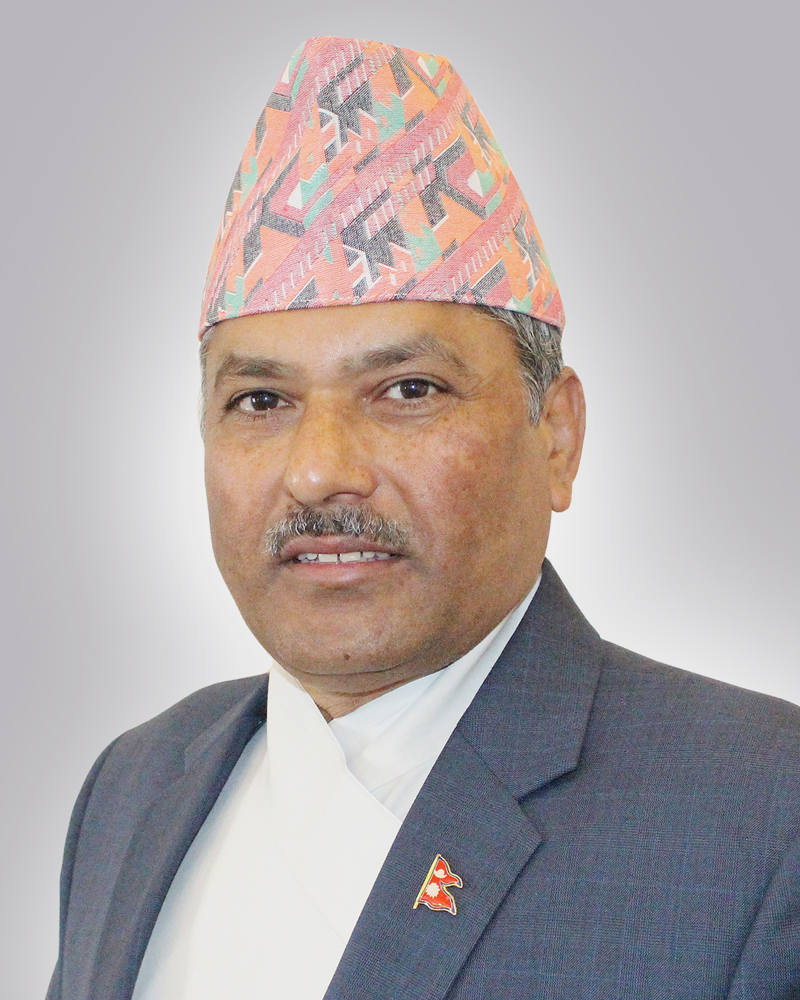

Home
About
Nepal Banknotes
Shah Dynasty Kings
Governors

Biography:
Maha Prasad Adhikari is the present 18th governor of Nepal. He was appointed as a newly governor on April 6, 2020. Recently denomination of Rs 5 & Rs 10 Banknotes is issued.